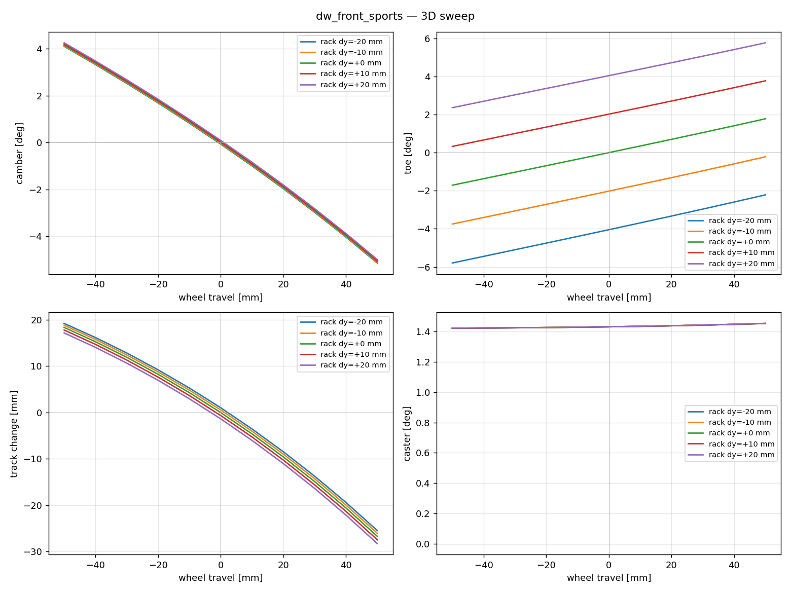

14. Hardpoint Kinematics (Ld4)¶
Learning objectives¶
이 chapter 를 마치면 다음을 할 수 있다.
- suspension 운동학의 공통 입출력 (travel, steer → camber, toe, track, caster) 과 강체 knuckle 의 회전으로부터 각도를 추출하는 방법을 안다.
- 4 topology (double wishbone / MacPherson / trailing arm / 5-link) 각각의 joint 제약과 풀이 방법을 설명한다.
- Gruebler mobility 로 각 topology 의 자유도가 닫히는지 검증한다.
- lookup (offline CSV 보간) 과 native (runtime 풀이) 두 backend 가 하나의 인터페이스로 통일되는 구조를 설명한다.
Prerequisites¶
- Chapter 13 — multibody 데이터 모형, hardpoint/joint abstraction.
- Chapter 06 — Ld3 와의 통합 지점 (camber/toe → Pacejka).
- 외부 — 강체 회전 (rotation matrix, axis-angle), Newton/LM, Gruebler.
14.1 동기 — 공통 black-box 인터페이스¶
모든 suspension 의 운동학은 동일한 인터페이스를 갖는다.
wheel_travel[m] — bump 양수 (wheel 이 chassis 대비 위로).steer_input— DW/MP 는 steering rack lateral displacement [m]; rear (TA/5-link) 는 무시.camber[rad] — wheel plane 의 y-z tilt (좌측 wheel: top 이 +y 면 양수).toe[rad] — spin axis 의 x-y 회전 (toe-in 양수).track_change[m] — wheel center 의 y 변위.caster[rad] — kingpin axis 의 x-z tilt.
14.2 가정¶
| 가정 | 의미 | 깨지는 case |
|---|---|---|
| 강체 link/knuckle | bushing compliance 없음 | Ld5 |
| Kinematic only | force coupling 없음 | force feedback |
| Front-only steer | rear steer 없음 | 4WS |
| Quasi-static FK | 동역학 없음 (자세만) | full DAE |
14.3 강체 운동학의 공통 패턴¶
knuckle 은 강체. 정적 wheel center 를 기준점으로, hardpoint 정적 offset 을 knuckle frame 에 고정. travel 에 따라 knuckle 이 회전·평행이동하면:
\(R\) 은 knuckle 회전 (정적 대비), \(LK\) 는 현재 lower-knuckle 위치. camber/toe 는 회전된 spin axis 에서:
각 topology 의 차이는 joint 제약이 \(R\) 을 어떻게 결정하느냐에 있다.
14.4 Double wishbone — sequential closed-form¶
UCA/LCA 가 각각 chassis revolute axis 를 갖고, knuckle 은 LK/UK/TK 세 ball joint 로 부착. Gruebler mobility (N=4: chassis, LCA, UCA, TieRod):
| joint | type | 제약 c |
|---|---|---|
| LCA-chassis | revolute | 5 |
| LCA-knuckle | ball | 3 |
| UCA-chassis | revolute | 5 |
| UCA-knuckle | ball | 3 |
| TieRod-rack | ball | 3 |
| TieRod-knuckle | ball | 3 |
\(M = 6(N-1) - \sum c = 24 - 22 = 2\). tie rod 자체 축 회전이 passive DOF 1 → active \(M=1\) (wheel travel). steer 입력 1 로 닫힌다.
풀이 순서 (sequential, global solve 불필요):
- LCA 각 \(\theta_l\) — wheel travel 목표로 Newton: $\(\text{wheel}_z(\theta_l) = (LK(\theta_l) + R(\theta_l)\,\text{off}_{\text{wheel}})_z \overset{!}{=} z_{\text{static}} + \text{travel}\)$ 진짜 wheel z 를 써야 한다 (small-angle 근사 \(LK_z+\text{off}_z\) 는 ±50 mm 에서 ~3 mm 오차).
- UCA 각 \(\theta_u\) — \(|UK - LK| = L_{LU}\) 보존하도록 sphere-sphere Newton.
- TK — 3-sphere trilateration (LK/UK/tie_rod_inner 중심, 반경 \(L_{LT}/L_{UT}/L_{tr}\)), 정적 위치에 가까운 해 선택.
- knuckle frame — (LK→UK) 를 kingpin x축, TK 로 y축 평면 → \(R_{\text{now}}\), \(R_\Delta = R_{\text{now}} R_{\text{static}}^T\).

DW 의 (travel, steer) sweep — camber/toe/track/caster 4 곡선. lookup table 의 source.
14.5 MacPherson — cylindrical joint 제약¶
DW 와 차이: UCA 가 없고 strut 이 그 역할. strut tube 는 knuckle 에 강체 결합, chassis top mount 는 spherical bearing, 내부는 telescoping (스프링 압축) + 축 회전 허용 → cylindrical joint.
핵심: strut 의 제약은 "strut 길이 일정" 이 아니라 "tube axis 가 top mount 를 통과" 이다. compression 길이는 자유 (스프링이 결정), 방향만 구속.
회전 후 cross-product 제약 (3 scalar, 1 redundant):
tie rod 거리 제약 1 scalar 추가 → knuckle 3 회전 DOF 가 닫힌다. LM 으로 푼다. strut 을 양단 ball-joint 고정길이 막대로 모델하면 (sphere 제약 1 scalar) 축 회전이 미닫혀 발산 → regularization hack + 비현실적 camber gain (~1°/mm). 올바른 cylindrical 제약으로는 0.034°/mm (sedan 표준), 단발 LM 수렴.
14.6 Trailing arm — 단일 revolute¶
가장 단순. arm + knuckle + wheel 이 한 강체, chassis 측 single revolute axis. \(M = 6 - 5 = 1\) (wheel travel), steer 없음. axis 방향이 gain 을 결정한다:
- pure trailing (axis ∥ +y): camber/toe gain 0.
- semi-trailing (axis 에 x 또는 z 성분): gain 발생.
풀이: arm 회전각 \(\theta\) 하나만 Newton (wheel z 목표).
14.7 5-link — general multilink¶
가장 일반적 (다른 topology 가 특수 케이스). 5 개의 양단 ball-joint rigid link. knuckle 6-DOF, 각 link 1 length 제약 → 5 제약 + wheel-z 입력 1 → 6 제약 on 6 DOF, 닫힘.
knuckle pose \(= (x, y, z, \text{axis-angle})\) 6-vector. 잔차:
Levenberg-Marquardt. continuation (이전 sweep 해를 warm-start) 으로 부드러운 단조 해 family.
14.8 두 backend — lookup vs native¶
같은 ISuspensionKinematics 인터페이스에 두 구현:
| Backend | 특성 |
|---|---|
| Lookup | offline solver 의 (travel × steer) CSV 를 bilinear 보간. O(1). |
| Native | runtime 에 hardpoint 직접 풀이. hardpoint 가 변하는 케이스 (compliance). |
native 출력이 grid point 에서 lookup 과 \(<10^{-3}\) rad 일치.
14.9 Ld3 와의 연결¶
fourteen_dof 가 매 substep: (1) per-wheel travel \(= z_u - z_{\text{corner,sprung}}\)
(bump 양수), (2) compute(travel, steer) → camber, toe, (3) 좌/우 mirror 부호,
(4) Ld2 의 Pacejka gamma 입력 + wheel steer 에 toe 가산. 이것이 chapter 06 의
phenomenological camber_per_roll · φ 를 대체한다. attach 안 하면 legacy
fallback (back-compat).
14.10 검증 전략¶
| 검증 | 케이스 |
|---|---|
| Gruebler mobility | 각 topology 의 active DOF = 입력 수 |
| Wheel-z 정확도 | true wheel z Newton 후 < 0.1 μm |
| native↔lookup | grid point 에서 \(<10^{-3}\) rad 일치 |
| self-consistency | diagnose.py 4 type gain 이 차종 표준 범위 |
14.11 한계¶
| 항목 | 현재 |
|---|---|
| Compliance (bushing) | 없음 — 강체 joint (Ld5) |
| Steer 통합 | DW/MP rack displacement 만; rear steer 없음 |
| Anti-dive/squat 정량 | kinematic 만; force 효과 미반영 |
| Tire force coupling | camber/toe → tire 입력만 (역방향 없음) |
| K&C chart | sweep CSV + plot; Adams 형식 미구현 |
14.12 다음 chapter 와의 연결¶
chapter 13-14 가 multibody kinematics (Ld4) 를 완성했다. chapter 15 는 이 모든 ladder 의 정확성을 보증하는 validation + DOE (ISO 표준 기동) 를, chapter 16 은 FMI 표준 통합을 다룬다.
14.13 참고문헌¶
- Milliken & Milliken, Race Car Vehicle Dynamics, SAE, 1995, §17 suspension geometry / instant center / roll center.
- Reimpell, Stoll, Betzler, The Automotive Chassis, 2001, K&C / suspension types.
- Gillespie, T., Fundamentals of Vehicle Dynamics, SAE, 1992, camber/toe gain 정의.
14.14 Self-check¶
1. DW 의 wheel-z Newton 에서 true wheel z 를 써야 하는 이유?
small-angle 근사 $LK_z+\text{off}_z$ 는 knuckle 회전을 무시해 ±50 mm travel 에서 ~3 mm 오차. 회전된 wheel center 의 실제 z 를 target 으로 풀어야 정확.2. MacPherson 을 고정길이 막대로 모델하면 왜 발산하나?
sphere 제약 1 scalar 만으로는 knuckle 의 strut-축 회전이 미구속 → 해가 닫히지 않아 발산/regularization 필요. cylindrical (cross-product 3, 1 redundant) 제약이 방향만 구속하고 길이는 자유로 둬야 정확.3. trailing arm 의 camber gain 이 axis 방향에 의존하는 이유?
pure trailing (axis ∥ y) 은 회전이 순수 pitch-up 이라 camber/toe 불변. axis 에 x/z 성분(semi-trailing)이 있으면 회전이 wheel plane 을 기울여 gain 발생.4. 5-link 가 다른 topology 의 일반형인 이유?
5 개 length 제약 + knuckle 6-DOF 의 일반 LM 문제. DW/MP/TA 는 link 일부가 revolute/ball/strut 로 특수화된 경우로, 같은 6-제약 풀이의 부분집합이다.5. lookup backend 가 native 와 거의 같은데도 native 가 필요한 이유?
lookup 은 고정 hardpoint 의 사전 sweep. hardpoint 가 runtime 에 변하는 경우 (compliance, 설계 편집, live editor) 는 native 가 즉시 재풀이해야 한다.14.15 VDSim 구현 노트¶
[VDSim impl] § 14.1 — 인터페이스 코드
core/include/vdsim/suspension.hpp:class ISuspensionKinematics { public: struct Output { double camber, toe, track_change, caster; }; virtual Output compute(double wheel_travel, double steer_input) const noexcept = 0; };[VDSim impl] § 14.4-14.7 — solver 파일 + 샘플
topology Python C++ native 샘플 gain DW dw_3d_solver.pydw_native_kinematics.cppcamber −0.094°/mm, RC 7.5 cm MP mp_3d_solver.pymp_native_kinematics.cppcamber 0.034°/mm, strut 19.4° TA ta_3d_solver.pyta_native_kinematics.cppcamber 0.022, toe 0.009°/mm 5-link fivelink_3d_solver.pyfivelink_native_kinematics.cppcamber 0.019, toe 0.026°/mm 회계 상세:
docs/tasks/T27_ld4_dw~T30_ld4_5link/REPORT.md.[VDSim impl] § 14.8 — backend factory + 검증
create_lookup_kinematics(csv)(bilinear),create_{dw,mp,ta,5link}_native_kinematics(yaml). 일치 검증:tests/unit/test_suspension_lookup.cpp.[VDSim impl] § 14.9 — Ld3 attach
auto k = vdsim::create_lookup_kinematics("dw_front.csv"); vdsim::attach_front_kinematics(*l3_dyn, std::move(k));[VDSim impl] § 14.x — toolchain
hardpoint YAML (configs/suspensions/*.yaml) ├─ tools/kinematics/diagnose.py self-consistency ├─ tools/kinematics/*_3d_solver.py sweep CSV ├─ tools/kinematics/import_hardpoints.py Adams CSV → YAML └─ builder/suspension_editor.html Three.js live edit (WS → native)diagnose.py출력 예: DW RC 7.5cm/camber −0.094°/mm/wheel-z err <0.1μm, MP strut 19.4°, TA semi-trailing 14°/anti-dive 5.5°, 5-link lengths [0.36,0.36,0.38,0.38,0.35].